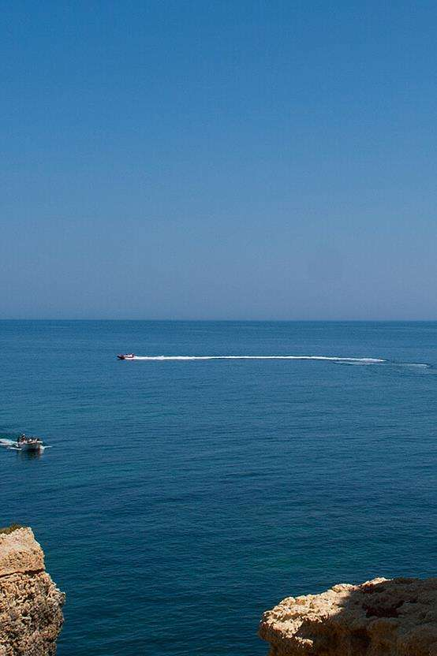

Verhalen website
Gesponsord

Het regent pijpenstelen van het merk Dunhill en het waait flink als ik de bus van de GVB uitstapt. Ik duw een gifgroene Koelstra kinderwagen voort, waarin mijn zoon ligt te slapen. Het is druk op het stationsplein, mensen houden hun blik gericht op de grond, een vrouw vermijdt een plas en voorkomt zo dat haar lichtbruine suede laarzen van Fred de la Bretonière niet nat worden. [...]